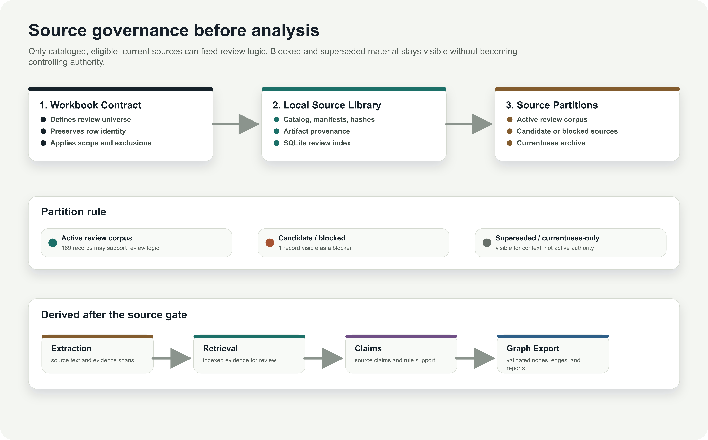
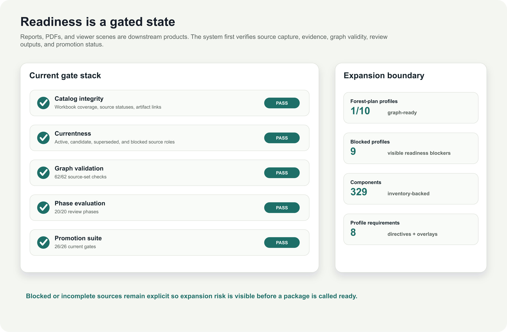

Standing Framework / Capabilities Brief
NEPA review service, made auditable
We provide professional NEPA reviews for projects using a graph-backed evidence process. The USFS Region 1 source library is the worked example: we update the authority graph with the most current applicable regulations and procedures, test applicability, run Forest Plan and full profile consistency review, trace evidence, flag older-regulation dependencies, and package decision support for the responsible official.
Example metrics: validated USFS Region 1 graph export.
1,916USFS Region 1 graph nodes
3,442USFS Region 1 graph edges
33applicable authorities
340screened-out authorities

Current-authority model
The authority graph is updated with the most current applicable regulations, USDA and Forest Service procedures, source records, directives, forest-plan components, applicability decisions, and readiness blockers instead of flattening them into a narrative answer.
Decision-support model
Each service finding is backed by graph-export validation. The V1 Region 1 example passed 75 graph checks and links generated rules and compliance findings back to source records, evidence spans, and review-specific applicability decisions.
Capability 1 / Applicability
From authority graph to decision support
For any NEPA document package, the process updates the authority graph with the most current applicable regulations and separates current applicable authorities from authorities that were considered but screened out. That makes the review politically legible and defensible.

Applicability scene: 373 candidate authority decisions, 33 applicable, 340 non-applicable. The image preserves the graph distinction between candidate authority, review decision, generated rule, and compliance finding.
Defensibility shown
Non-applicable authorities stay in the graph, so the reviewer can explain what was considered and screened out instead of only showing final inclusions.
Responsible-official support
The output shows a visible path from authority graph to decision, rule generation, and compliance finding rather than a black-box conclusion.
Capability 2 / Evidence Traceability
From source record to authority graph
A responsible official or review team should be able to ask where each authority and finding came from. The evidence view turns source records, citation labels, extracted spans, and rule templates into a traceable authority graph before findings are used for decision support.

Evidence path scene: one actual source-record -> rule-template -> applicability-decision -> generated-rule -> compliance-finding path is derived from graph edges, with the evidence span kept visible.
What is inspectable
Source records, citation labels, extraction spans, applicability decisions, generated rules, and findings all remain separate graph objects with explicit support edges.
What this proves
The service is not just a visualization. It shows that findings can be traced back to the repo evidence model and the validated local graph export.
Capability 3 / Reverse Compliance And Decision Support
Find gaps before they become decision risk
Our review workflow supports forward review and reverse compliance. Most EAs receive a Forest Plan consistency document; we extend that into a full profile consistency document across applicable laws and authorities, then package decision support for the responsible official.

Readiness scene: blocked profiles and missing-source requirements are graph objects. The USFS Region 1 example shows Custer Gallatin as ready while preventing broader Region 1 completeness claims.
Document intakeDraft NEPA package, appendices, catalog records, and provenance.
Current authority graphMost current applicable regulations, agency procedures, source records, and authority families.
ApplicabilityDocument-specific applicable and screened-out authorities.
Reverse complianceUnsupported claims, stale references, and missing evidence.
Consistency documentForest Plan consistency plus full profile consistency across applicable laws.
Decision supportResponsible-official briefing with findings, gaps, and evidence paths.
What this service demonstrates
- Review any NEPA document package against an authority graph updated with the most current applicable regulations.
- Identify unsupported or older-regulation-based statements through reverse compliance.
- Retain screened-out authorities for defensibility and political legibility.
- Provide responsible-official decision support with evidence paths and residual risks.
Currentness boundary: older implementing-regulation language is treated as a review risk and flagged outside the current NEPA review basis unless supported by current agency procedure or another current project-specific authority. The graph visualizes the validated USFS Region 1 source set and review overlay; it is not a substitute for legal review.